Covariance models¶
We consider  a multivariate
stochastic process of dimension
a multivariate
stochastic process of dimension  , where
, where  is an event,
is an event,  is a domain of
is a domain of  ,
,
 is a multivariate index and
is a multivariate index and
 .
.
We note 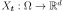 the random variable at
index  defined by
defined by
 and
and
 a realization of the process
a realization of the process
 , for a given defined by
, for a given defined by
 .
.
If the process is a second order process, we note:
 its mean function, defined by
its mean function, defined by
 ,
,- 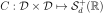 its covariance function, defined by 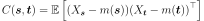,
- 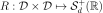 its
correlation function, defined for all
 ,
by
,
by  such that for all
such that for all  ,
,
 .
.
In a general way, the covariance models write:
where:
- 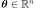 is the scale parameter
 id the amplitude parameter
id the amplitude parameter- 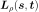 is the Cholesky factor of
 :
:
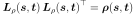
The correlation function 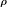 may depend on additional specific parameters which are not made explicit here.
The global correlation is given by two separate correlations:
the spatial correlation between the components of
which is given by the correlation matrix 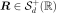 and the vector of marginal variances
the correlation between 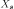 and
- In the general case, the correlation links each component
to all the components of and
;
- In some particular cases, the correlation is such that
and that link does not depend on the component
. In that case,
by 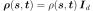. Then, the covariance model writes:
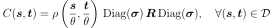
API: